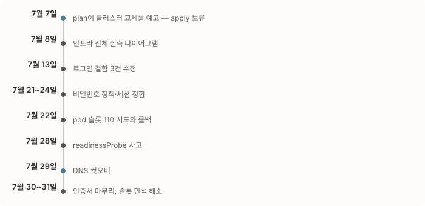
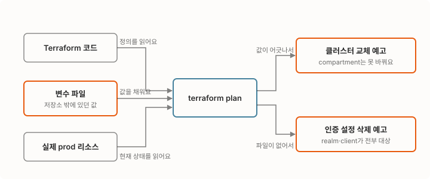
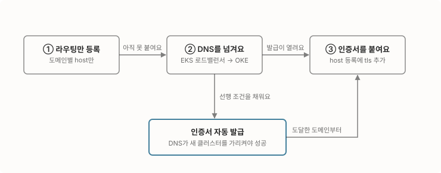

운영 클러스터를 물려받았는데 코드와 실물이 어디서 어긋나 있는지 아무도 모르는 상태였어요. terraform plan 한 줄이 그 클러스터의 교체를 예고한 날부터, 저는 apply 전에 교체인지 제자리 수정인지부터 보는 규칙을 만들고 인프라 전체를 실측했죠. 네 겹으로 막혀 있던 로그인을 풀고, 7월 29일 DNS 컷오버를 라우팅·DNS·인증서 세 단계로 나눠 prod 트래픽을 넘겼어요.

1편에서는 크레딧으로 시작된 이관의 설계와 dev 구축을 다뤘어요. 2편은 prod예요. 원래는 dev에 이어 prod까지 제가 하려고 했어요. 그런데 ATS 구축 같은 급한 일이 겹치면서 손을 뗐고, prod는 다른 분이 dev와 같은 방식으로 구성하기로 했어요. 그러다 6월 말에 그 일이 저한테 다시 왔어요.
금방 끝날 줄 알았어요. dev를 Terraform으로 처음부터 끝까지 짜뒀으니, prod는 그 코드에 환경만 바꿔서 얹으면 되겠거니 했거든요. 받아보니 아니더라고요. 클러스터도 Vault도 Keycloak도 만들어져 있긴 한데, 그게 코드대로 만들어진 건지를 알 수가 없었어요.
물려받은 prod는 코드와 실물이 맞는지 알 수 없었어요
dev는 제가 코드로 만들었으니 코드를 열어보면 실물이 어떤지 알 수 있어요. prod는 그게 안 됐어요. 비밀값 저장소(Vault)와 인증 서버(Keycloak)까지 설치는 끝나 있었지만, Terraform 코드는 dev 것을 가져온 형태로 남아 있었고 실제 prod 리소스와 맞춰본 흔적은 없었어요.
처음에는 눈앞의 요구부터 처리했어요. 권한 정책(IAM)을 추가하고 버킷을 손보는 작은 변경들이었죠. 전체를 파악하지 않고도 굴러가는 듯 보였는데, 그 착각은 열흘 남짓 만에 깨졌어요.
plan 한 줄이 운영 클러스터를 지우겠다고 했어요
7월 7일, IAM 정책 하나를 추가하려고 대상을 좁혀 terraform plan을 돌렸는데 변경 목록에 must be replaced가 떠 있었어요. 운영 클러스터의 교체 계획이 섞여 있었거든요. 원인은 디스크에 남아 있던 클러스터 스택의 변수 파일이었어요. OCI의 리소스는 compartment(테넌시 안에서 리소스를 묶는 폴더 같은 단위)에 속하는데, 실제 운영 클러스터가 있는 compartment와 파일이 가리키는 compartment가 달랐어요. 클러스터의 compartment는 생성 후 바꿀 수 없는 값이라, Terraform은 이 어긋남을 “부수고 다시 만들기”로 풀려던 거예요. 그대로 apply했다면 운영 클러스터가 통째로 사라졌겠죠.
apply는 하지 않았어요. 저장돼 있던 plan 파일부터 삭제하고, 변수 파일이 실제 적용 상태와 어긋나 있다는 사실을 기록으로 남겼어요. 여기서 규칙이 하나 생겼고요.
노드나 클러스터를 건드리는 변경은 plan에서 제자리 수정인지 교체인지부터 확인한다.
이걸 교체 여부 먼저 보기라고 부를게요. 교체라면 prod 전 노드가 동시에 사라지는 장애니까, 확인 비용이 몇 초라도 건너뛸 수 없는 절차가 됐어요.
전체 파악은 이 사고 다음 날부터 시작했어요. 클러스터·네트워크·도메인 구성을 실측해 인프라 전체를 다이어그램 한 장으로 정리했죠. 그 과정에서 같은 종류의 함정을 인증 서버 쪽에서도 하나 더 찾았어요. 이쪽은 기능 스위치를 담은 변수 파일이 git 추적에서 빠져 있어서, 그 파일 없이 plan을 돌리면 인증 설정 묶음(realm)과 접속 앱 등록(client)이 전부 삭제 대상으로 보였어요. 파일을 추적으로 전환해 함정을 없앴어요.

두 함정의 모양이 같아요. plan은 코드와 변수 파일과 실제 리소스를 함께 읽는데, 셋 중 하나가 저장소 밖에 있으면 사람마다 다른 답을 받아요. 제 손에서만 맞는 plan은 plan이 아니었던 거죠.
라이브에서 먼저 고친 값은 코드로 되돌려 심었어요
이관 중에는 급해서 콘솔이나 관리 API로 값을 직접 고치는 일이 생겨요. 문제는 그렇게 고친 값이 코드에 없으면 다음 apply가 그걸 지운다는 거예요. 아까의 함정과 방향만 반대일 뿐 같은 어긋남이에요. 그래서 코드로 되돌려 심기를 짝 규칙으로 뒀어요. 라이브를 손으로 고쳤으면 같은 값을 코드에도 넣고, plan이 아무 변경도 내놓지 않는 걸 확인하고 끝낸다.
세 번 적용했어요.
- 토큰 수명을 12시간으로 늘린 값이 그랬어요. 세션 수명이 이미 12시간이라 거기에 맞춘 값인데, 라이브는 DB를 직접 고쳐 쓰고 있었고 코드에는 1시간이 남아 있었어요. 코드에 반영하지 않았다면 다음 apply에서 1시간으로 되감겼을 거예요.
- 협력사 쪽 realm에 없던 사용자 역할이 그랬어요. 역할이 없으니 발급된 토큰에 권한 정보가 비었고, 구 클러스터 게이트웨이가 그 토큰을 검증하다 500으로 죽었어요. 관리 API로 역할을 만들고 32명에게 부여한 뒤, 같은 정의를 코드로 들여와 plan이 조용해지는 걸 확인했어요.
- 컷오버 준비로 미리 넣어둔 도메인 목록이 그랬어요. 관리 API로 추가한 접속 허용 주소들이 코드에 없어서, 다음 apply에서 6개가 삭제 대상으로 잡혀 있었어요. plan으로 그 삭제를 먼저 보고 코드에 심었죠.
세 번째는 apply 전에 plan 목록을 눈으로 훑은 게 실제로 걸러낸 사례예요. 삭제 대상을 못 봤다면 컷오버 직전에 그 도메인들의 브라우저 호출과 로그인 복귀가 다시 막혔을 테니까요.
로그인은 네 겹으로 막혀 있었어요
이관된 사용자들의 계정 문제는 원인이 하나가 아니라 네 겹이었어요. 로그인을 막는 게 세 겹, 비밀번호 재설정을 막는 게 한 겹. 한 겹을 고치면 다음 겹이 나타났고요.
| 무엇이 막았나 | 어떻게 풀었나 |
|---|---|
| 이관으로 복원된 사용자 88명이 “이메일 미인증” 상태인데 새 인증 서버가 이메일 인증을 요구해서, 아이디와 비밀번호를 직접 넣는 로그인이 전원 차단됐어요 | 기존 운영과 같은 무인증 설정으로 맞췄어요 |
| 로그인 후 돌아올 주소(redirect URI) 목록이 실제 도메인과 어긋난 게 3건이었어요 | 잘못 추정된 주소 하나, 누락 하나, 폐기된 도메인 하나를 실제 라우팅 설정과 대조해 정리했어요 |
| 웹 서비스 로그인이 500으로 실패했는데, 인증 앱이 앱 등록을 검증하는 DB를 legacy 환경과 공유하고 있었어요 | 공유된 행을 고치지 않고 새 앱 등록을 따로 만들어, 새 클러스터만 거기로 갈아탔어요 |
| 이관 중 유입된 강제 비밀번호 정책이 기존 사용자의 비밀번호 변경과 재설정을 막고 있었어요 | 기존 환경이 무정책이었음을 확인하고 동일하게 되돌렸어요 |
세 번째 줄은 조금 더 풀어 쓸게요. 새로 발급한 비밀값을 공유 DB에 반영하면 로그인은 살아나는데, 같은 행을 legacy 환경도 읽고 있어서 그쪽 로그인이 깨져요. 어느 쪽을 고쳐도 다른 쪽이 죽는 자리였죠. 그래서 기존 행은 손대지 않고 새 행을 하나 추가한 다음, 새 클러스터의 비밀값 참조와 게이트웨이 설정만 새 등록으로 돌렸어요. 이걸 앱 등록 분리라고 불렀고, 배포는 두 환경을 나란히 놓고 응답을 비교하는 방식으로 검증했어요. 같은 날 서비스 15개 묶음에 반영했어요.
첫 줄에도 함정이 하나 있었어요. 서버 설정을 무인증으로 바꿔도, 이미 계정마다 “이메일을 인증하라”는 요구가 박혀 있으면 그 계정은 여전히 막혀요. 설정과 계정을 따로 손봐야 풀리는 구조였어요.
세션은 갱신 자체가 불가능한 상태였어요
네 겹과 별개로 세션 문제가 하나 더 있었어요. 어드민 로그인이 자꾸 풀린다는 피드백을 받았는데, 원인을 보니 토큰 갱신이 구조적으로 불가능한 상태였죠. 갱신 요청을 보낼 주소가 브라우저에서 도달할 수 없는 localhost로 설정돼 있었고, 실제로 인증 서버에 갱신 요청이 0건이었어요. 근본 해결은 앱 쪽 주소 교정이지만 컷오버가 먼저라, 토큰 수명을 세션 수명(12시간)과 일치시키는 완화부터 적용했어요. 이 완화값이 앞에서 코드로 되돌려 심은 세 건 중 첫 번째예요.
컷오버는 라우팅 먼저, 인증서 나중이었어요
7월 29일 DNS 컷오버의 핵심은 기술이 아니라 순서였어요. HTTPS 인증서 자동 발급(ACME)은 도메인의 DNS가 새 클러스터를 가리켜야 성공해요. DNS가 아직 EKS를 보는 동안 인증서부터 걸면 발급이 실패해요. 그래서 한 번에 옮기지 않고 세 단계로 나눴어요. 이 순서를 라우팅 먼저, 인증서 나중이라고 부를게요.

순서 말고 준비도 있었어요. DNS를 넘기는 순간 EKS에만 있던 것들은 그대로 404가 되니까, 아직 안 옮겨진 자리를 미리 찾아야 했거든요.
- EKS에서만 돌던 서비스 두 종을 새 클러스터에 올렸어요. 그대로 넘겼으면 경로 두 개가 컷오버와 동시에 404를 냈을 거예요.
- 같은 DB를 공유한 채 OKE만 옛 버전에 멈춰 있던 서비스 7종의 이미지를 EKS 현행으로 맞췄어요. 초기에 한 번 심어두고 따라잡지 않으면 두 클러스터가 같은 데이터를 서로 다른 코드로 읽게 되더라고요.
준비가 끝난 뒤 옮기는 순서는 이렇게 잡았어요.
- 라우팅을 먼저 걸어요. 새 클러스터에 도메인별 라우팅(host)을 미리 등록해요. 인증서는 아직 붙일 수 없으니 host만.
- DNS를 넘겨요. EKS에 마지막까지 남아 있던 서비스 4종을 정지하고, DNS를 EKS 로드밸런서에서 OKE로 돌려요.
- 마지막이 인증서예요. DNS가 넘어와 발급이 가능해진 도메인부터, host만 있던 등록에 인증서를 정식으로 붙여요.
인증서를 붙일 때 하나 더 정한 게 있어요. 컷오버처럼 여러 도메인이 서로 다른 시점에 넘어오는 상황에서는 실패가 번지지 않게 쪼개는 쪽이 안전하거든요.
인증서 저장소는 도메인마다 나눈다. 한 묶음에 담으면 한 도메인의 발급 실패가 같은 묶음의 멀쩡한 인증서까지 무효로 만든다.
2단계 직후 HTTPS 연결이 실패하는 도메인이 하나 나왔어요. 라우팅에는 등록돼 있지만 인증서 목록에 빠져 있던 경우라, 인증서를 추가하는 핫픽스를 바로 넣었죠. 그런데 이 핫픽스는 바로 다음 결정에서 무용지물이 됐어요. 해당 도메인을 살리는 대신 DNS 레코드째 삭제하기로 했거든요.
컷오버 다음 날, 미뤄뒀던 3단계 인증서 승격을 마무리했어요. 전환 여부를 확인하는 과정에 함정이 하나 있었는데, 로컬 DNS 리졸버가 옛 로드밸런서 주소를 캐시하고 있어서 전환 확인은 도메인의 원본 기록을 가진 권위 네임서버에 직접 물어야 했어요. 인증서 발급 요청이 실제로 새 클러스터에 도달하는지도 주소를 강제로 지정해 눈으로 봤어요. 마지막으로 prod 인증서 16건 전부 정상인 걸 확인했어요.
컷오버 주간에 세 가지가 터졌어요
컷오버를 전후한 나흘(7/28~31) 동안 예상 못 한 문제가 세 번 터졌어요. 셋 다 이관 작업 자체가 실패한 건 아니었어요. 기존 구성이 EKS의 어떤 기능에 기대고 있었는데 OKE에는 그게 없었거나, OKE의 제약을 미리 몰랐던 경우였죠.
-
첫째, readinessProbe가 없었어요. 컷오버 전날, 한 서비스의 백엔드를 신형으로 전환 배포한 직후 연결 거부 55건이 발생했어요. 스케일아웃 때 앱이 뜨기 전에 트래픽이 들어오는 구조가 원인이었고, 서비스 20종에 probe 표준을 넣는 것으로 마무리됐어요. 이 사고는 별도 글로 정리해뒀어요.
-
둘째, pod 슬롯이 만석이었죠. 7월 31일 배포가
0/5 nodes are available: Too many pods로 실패했어요. 이 클러스터는 노드당 pod 31개가 상한인데(2 OCPU 노드의 네트워크 카드 수가 정하는 제약), 5 × 31 = 155 슬롯이 이미 만석이었어요. 노드를 6대로 늘려 6 × 31 = 186 슬롯을 만드는 정공법과, 슬롯을 갉아먹던 낭비의 회수를 병행했어요. 완료된 CronJob pod 17개가 슬롯의 11%를 상시 점유하고 있었거든요. 매분 도는 작업의 성공 기록 보존을 줄여 6슬롯, 나머지 작업들에서 4슬롯, 이관 후 계속 재시작만 하던 서비스를 내려 3슬롯을 되찾았어요. -
셋째, 자격증명이 비어 있었어요. 어드민의 이미지 API가 500을 냈어요. EKS에서는 클라우드가 pod에 스토리지 접근 자격증명을 자동으로 넣어줬는데, OKE에는 그 경로가 없었어요. 같은 네임스페이스에 이미 있던 Secret을 참조하는 것으로 해결했고, 비밀값은 어디에도 복제하지 않았어요. 다만 이 방식은 그 Secret이 있는 환경에서만 성립해서, 스테이징에는 같은 이름의 Secret이 없는 걸 확인하고 prod 쪽에만 덧붙였어요.
지울 때는 증명했고, 늘릴 때는 못 봤어요
이관 막바지에 판정을 두 번 했어요. 하나는 컷오버 당일이었고, 다른 하나는 그 일주일 전이었어요. 하나는 통과했고 하나는 되돌렸는데, 나뉜 지점이 분명해서 나란히 적어둘게요.
| 판정 | 들어온 입력 | 중간에 본 것 | 나간 출력 |
|---|---|---|---|
| 구 도메인을 지워도 되는가 | 이 도메인에 트래픽이 없어 보인다 | 신 도메인 2,079건을 대조군으로 먼저 확인했어요 | DNS 레코드째 삭제했어요 |
| 노드당 pod 상한을 올려도 되는가 | 슬롯이 부족하다 | 공식 문서가 허용하는 값만 봤어요 | dev에서 노드가 뜨지 못해 되돌렸어요 |
통과한 판정: 구 도메인을 지워도 되는가. 입력은 “이 도메인에 트래픽이 없다”는 인상이었어요. 그런데 0건이라는 주장은 로그에 호스트가 남는다는 사실부터 확인해야 성립해요. 호스트를 기록하지 않는 로그라면 어떤 도메인이든 0건으로 보이니까요. 그래서 같은 기간 신 도메인의 요청 수(2,079건)를 대조군으로 먼저 확인하고, 그 다음에 구 도메인의 24시간 0건을 봤어요. 출력은 DNS 레코드째 삭제예요. 방치된 인증서 설정은 갱신 시점에 조용히 실패를 반복하므로 라우팅 등록과 함께 제거했어요.
되돌린 판정: 노드당 pod 상한을 올려도 되는가. 입력은 슬롯 부족이었고, 상한 31을 110으로 올리자는 게 초안이었어요. 공식 문서가 허용하는 값이라 통과할 것처럼 보였죠. 여기서 못 본 게 IP였어요. 이 네트워크 구조에서는 pod가 IP를 워커 서브넷에서 직접 가져가는데, 서브넷이 내줄 수 있는 IP는 251개뿐이거든요. 노드 여섯 대에 110개씩이면 110 × 6 = 660개가 필요하니, 공식 상한보다 서브넷이 먼저 바닥나요. 출력은 롤백이었어요. dev에서 노드를 교체하는 시점에 새 노드가 IP를 대량 예약하다 고갈을 일으켰고, 노드가 아예 뜨지 못했어요. 복구도 순서가 있었는데, 템플릿을 먼저 되돌리고 노드를 지워야 교체 노드가 또 깨지지 않더라고요.
두 판정을 나눈 건 숫자를 봤느냐가 아니라, 그 숫자가 성립하는 조건을 봤느냐였다.
앞쪽은 로그가 호스트를 남기는지를 먼저 봤고, 뒤쪽은 공식 상한이 서브넷 크기와 무관하다는 전제를 안 봤어요. 그래서 슬롯 부족은 상한을 올리는 대신 노드를 늘리는 쪽으로 풀었고, 같은 코어 수의 상위 세대로 바꾸는 안도 함께 접었어요. 세대가 올라가도 네트워크 카드 규칙이 같아서 슬롯은 그대로고 비용만 오르거든요.
무엇이 달라졌나
컷오버가 끝나고 남은 숫자들이에요.
| 항목 | 발견 당시 | 조치 후 |
|---|---|---|
| 교체 여부 먼저 보기 | 대상을 좁힌 plan에도 운영 클러스터 교체가 섞여 들어왔어요 | 노드·클러스터 변경은 apply 전에 교체인지부터 확인해요 |
| 코드로 되돌려 심기 | 라이브에서만 고친 값이 다음 apply에 지워질 상태였어요 | 세 건을 코드에 심고 plan이 조용한 걸 확인했어요 |
| 앱 등록 분리 | 웹 서비스 로그인이 공유 DB 때문에 500으로 막혔어요 | 공유 행을 건드리지 않고 새 클러스터만 새 등록으로 옮겼어요 |
| 라우팅 먼저, 인증서 나중 | DNS 전 인증서 발급이 실패하는 구조였어요 | prod 인증서 16건이 전부 정상이에요 |
| pod 슬롯 | 155개가 만석이라 배포가 실패했어요 | 186개로 늘리고 낭비분 13슬롯도 회수했어요 |
| readinessProbe | 없어서 스케일아웃 때 연결이 거부됐어요 | 서비스 20종에 표준으로 적용했어요 |
부채도 남았어요. 어드민 세션 문제는 근본 해결(앱의 갱신 주소 교정)까지 가지 못하고 완화만 해둔 상태예요. 토큰 수명이 곧 실질 세션 수명인 채로 돌고 있어서, 앱 쪽 주소를 고치기 전까지는 이 상태가 정상이 아니라는 걸 기억해둬야 해요.
가장 큰 변화는 표 밖에 있어요. 컷오버 주간에 터진 문제들을 당일 안에 수습할 수 있었던 건, 사고 뒤에 그려둔 다이어그램과 코드화된 인프라 덕이 컸어요. 어디를 고쳐야 하는지 찾는 시간이 거의 들지 않았거든요.
이관은 옮기기 전에 알아내는 일이었어요
1편을 “이관은 옮기기 전에 알아내기였다”로 시작했는데, prod에서는 그게 더 분명했어요. 알아내지 않고 apply했다면 클러스터가 사라졌을 거고, 알아내지 않고 도메인을 지웠다면 트래픽이 끊겼을 거예요.
dev를 코드화해뒀으니 prod는 금방일 거라고 생각한 게 처음의 오판이었어요. 코드가 있다는 것과 그 코드가 실물과 같다는 것은 다른 얘기였고, prod에서 쓴 시간의 대부분은 그 둘이 어디서 어긋났는지 확인하는 데 들어갔어요. 저는 그 파악을 열흘 늦게 시작했고, 그 대가가 7월 7일이었어요. 이 시리즈는 여기서 완결이에요. 이관이 남긴 개별 사고들은 각각의 글로 이어갈게요.